Main Content


-
 Afghanistan
Afghanistan -
Akrotiri
-
 Albania
Albania -
 Algeria
Algeria -
 American Samoa
American Samoa -
 Andorra
Andorra -
Angola
-
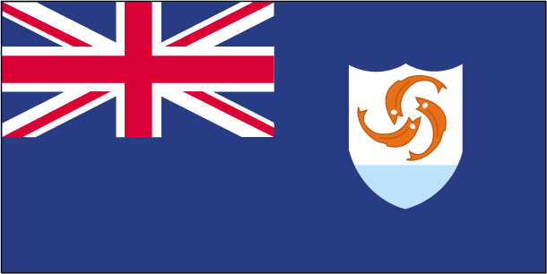Anguilla
-
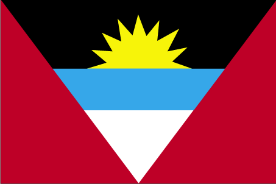Antigua and Barbuda
-
 Argentina
Argentina -
 Armenia
Armenia -
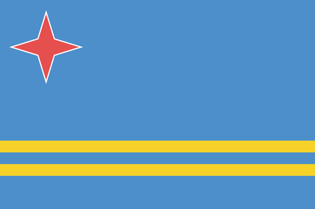Aruba
-
 Ashmore and Cartier Islands
Ashmore and Cartier Islands -
 Australia
Australia -
 Austria
Austria -
 Azerbaijan
Azerbaijan -
 Bahamas, The
Bahamas, The -
Bahrain
-
 Bangladesh
Bangladesh -
Barbados
-
 Belarus
Belarus -
 Belgium
Belgium -
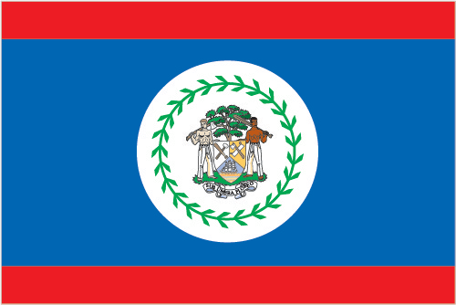Belize
-
 Benin
Benin -
 Bermuda
Bermuda -
 Bhutan
Bhutan -
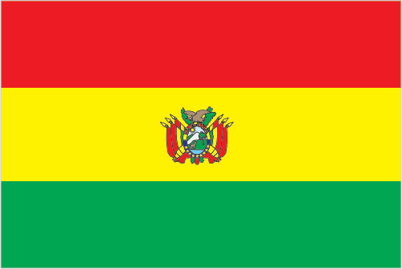Bolivia
-
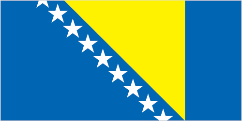Bosnia and Herzegovina
-
 Botswana
Botswana -
 Bouvet Island
Bouvet Island -
 Brazil
Brazil -
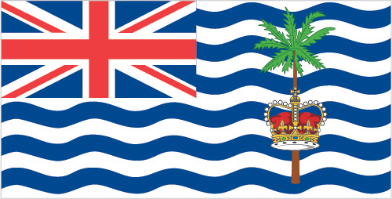British Indian Ocean Territory
-
 British Virgin Islands
British Virgin Islands -
Brunei
-
 Bulgaria
Bulgaria -
 Burkina Faso
Burkina Faso -
 Burma
Burma -
 Burundi
Burundi -
Cabo Verde
-
 Cambodia
Cambodia -
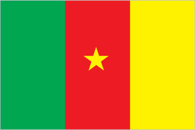Cameroon
-
 Canada
Canada -
Cayman Islands
-
Central African Republic
-
 Chad
Chad -
 Chile
Chile -
 China
China -
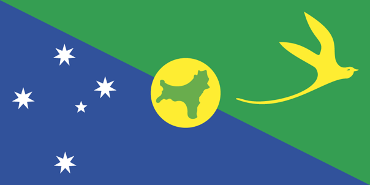Christmas Island
-
Clipperton Island
-
 Islands Flag") Cocos (Keeling) Islands
Cocos (Keeling) Islands -
 Colombia
Colombia -
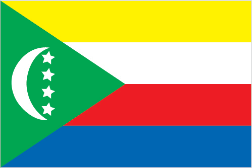Comoros
-
 Congo, Democratic Republic of the
Congo, Democratic Republic of the -
 Congo, Republic of the
Congo, Republic of the -
Cook Islands
-
 Coral Sea Islands
Coral Sea Islands -
 Costa Rica
Costa Rica -
Cote d'Ivoire
-
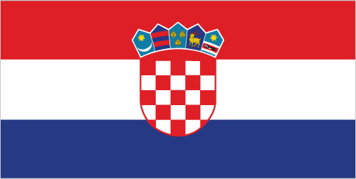Croatia
-
 Cuba
Cuba -
 Curacao
Curacao -
Cyprus
-
 Czechia
Czechia -
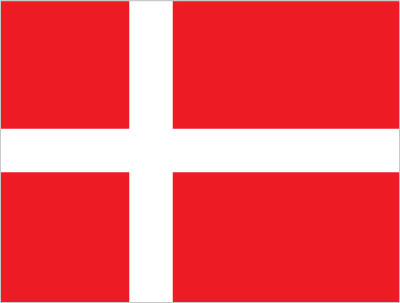Denmark
-
 Dhekelia
Dhekelia -
 Djibouti
Djibouti -
 Dominica
Dominica -
 Dominican Republic
Dominican Republic -
 Ecuador
Ecuador -
 Egypt
Egypt -
 El Salvador
El Salvador -
 Equatorial Guinea
Equatorial Guinea -
 Eritrea
Eritrea -
Estonia
-
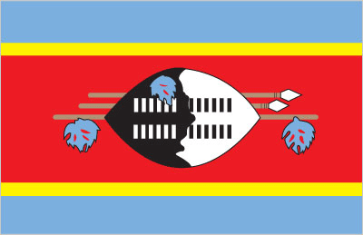Eswatini
-
 Ethiopia
Ethiopia -
 European Union
European Union -
 Flag") Falkland Islands (Islas Malvinas)
Falkland Islands (Islas Malvinas) -
 Faroe Islands
Faroe Islands -
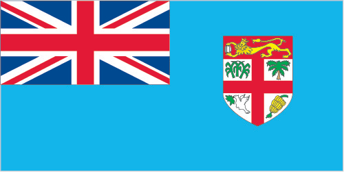Fiji
-
 Finland
Finland -
 France
France -
French Polynesia
-
French Southern and Antarctic Lands
-
Gabon
-
 Gambia, The
Gambia, The -
 Georgia
Georgia -
 Germany
Germany -
 Ghana
Ghana -
Gibraltar
-
 Greece
Greece -
 Greenland
Greenland -
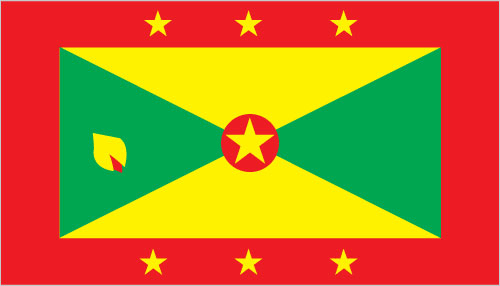Grenada
-
Guam
-
Guatemala
-
 Guernsey
Guernsey -
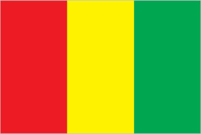Guinea
-
Guinea-Bissau
-
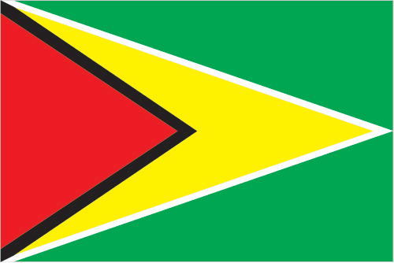Guyana
-
 Haiti
Haiti -
 Heard Island and McDonald Islands
Heard Island and McDonald Islands -
 Flag") Holy See (Vatican City)
Holy See (Vatican City) -
 Honduras
Honduras -
 Hong Kong
Hong Kong -
 Hungary
Hungary -
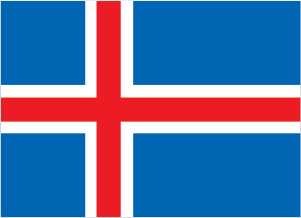Iceland
-
 India
India -
 Indonesia
Indonesia -
 Iran
Iran -
 Iraq
Iraq -
 Ireland
Ireland -
 Isle of Man
Isle of Man -
 Israel
Israel -
 Italy
Italy -
 Jamaica
Jamaica -
Jan Mayen
-
 Japan
Japan -
 Jersey
Jersey -
 Jordan
Jordan -
 Kazakhstan
Kazakhstan -
 Kenya
Kenya -
 Kiribati
Kiribati -
 Korea, North
Korea, North -
 Korea, South
Korea, South -
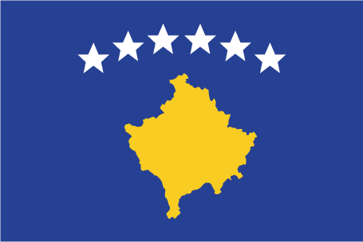Kosovo
-
 Kuwait
Kuwait -
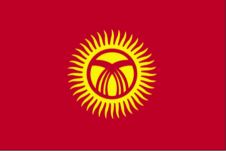Kyrgyzstan
-
 Laos
Laos -
 Latvia
Latvia -
 Lebanon
Lebanon -
 Lesotho
Lesotho -
 Liberia
Liberia -
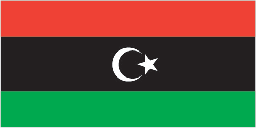Libya
-
 Liechtenstein
Liechtenstein -
Lithuania
-
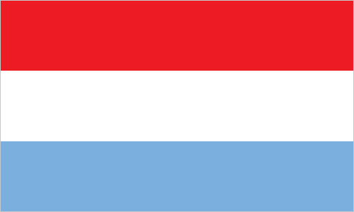Luxembourg
-
Macau
-
 Macedonia
Macedonia -
 Madagascar
Madagascar -
Malawi
-
 Malaysia
Malaysia -
 Maldives
Maldives -
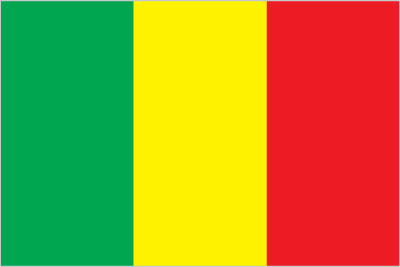Mali
-
 Malta
Malta -
 Marshall Islands
Marshall Islands -
Mauritania
-
 Mauritius
Mauritius -
 Mexico
Mexico -
 Micronesia, Federated States of
Micronesia, Federated States of -
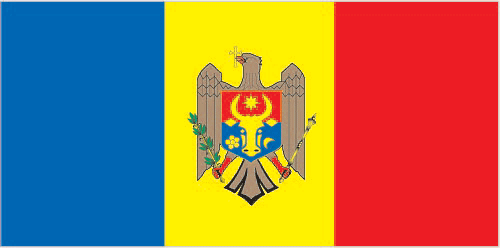Moldova
-
 Monaco
Monaco -
 Mongolia
Mongolia -
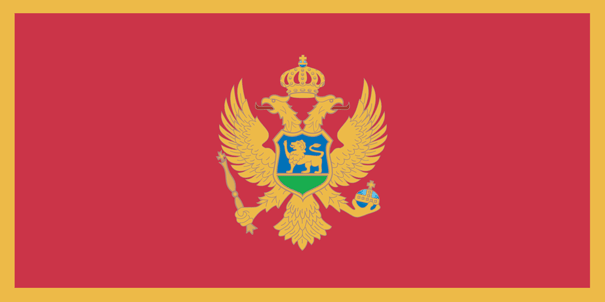Montenegro
-
 Montserrat
Montserrat -
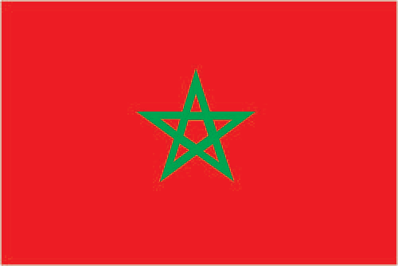Morocco
-
 Mozambique
Mozambique -
 Namibia
Namibia -
 Nauru
Nauru -
 Navassa Island
Navassa Island -
 Nepal
Nepal -
 Netherlands
Netherlands -
New Caledonia
-
 New Zealand
New Zealand -
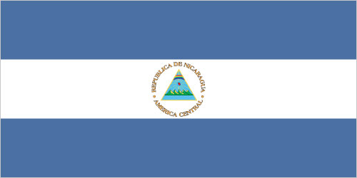Nicaragua
-
 Niger
Niger -
 Nigeria
Nigeria -
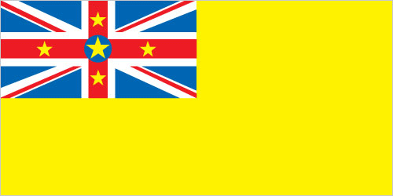Niue
-
 Norfolk Island
Norfolk Island -
 Northern Mariana Islands
Northern Mariana Islands -
Norway
-
 Oman
Oman -
Pakistan
-
Palau
-
 Panama
Panama -
 Papua New Guinea
Papua New Guinea -
 Paraguay
Paraguay -
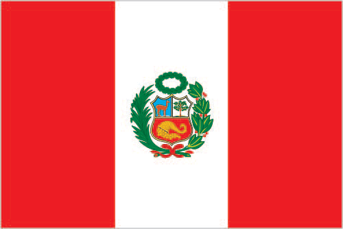Peru
-
 Philippines
Philippines -
 Pitcairn Islands
Pitcairn Islands -
 Poland
Poland -
 Portugal
Portugal -
 Puerto Rico
Puerto Rico -
Qatar
-
 Romania
Romania -
 Russia
Russia -
 Rwanda
Rwanda -
Saint Barthelemy
-
Saint Helena, Ascension, and Tristan da Cunha
-
Saint Kitts and Nevis
-
 Saint Lucia
Saint Lucia -
 Saint Martin
Saint Martin -
 Saint Pierre and Miquelon
Saint Pierre and Miquelon -
 Saint Vincent and the Grenadines
Saint Vincent and the Grenadines -
Samoa
-
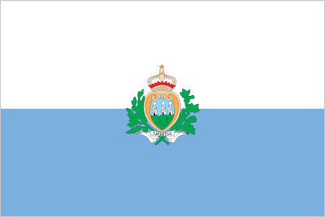San Marino
-
 Sao Tome and Principe
Sao Tome and Principe -
 Saudi Arabia
Saudi Arabia -
 Senegal
Senegal -
 Serbia
Serbia -
Seychelles
-
 Sierra Leone
Sierra Leone -
 Singapore
Singapore -
 Sint Maarten
Sint Maarten -
 Slovakia
Slovakia -
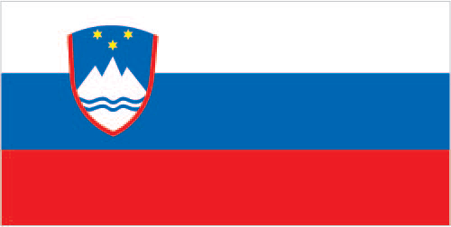Slovenia
-
 Solomon Islands
Solomon Islands -
 Somalia
Somalia -
 South Africa
South Africa -
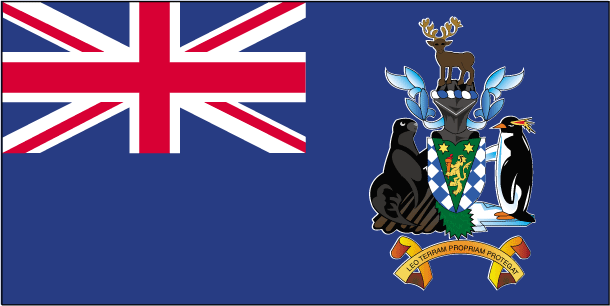South Georgia and South Sandwich Islands
-
South Sudan
-
 Spain
Spain -
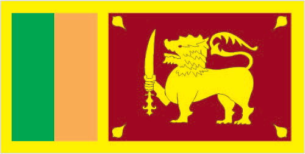Sri Lanka
-
 Sudan
Sudan -
Suriname
-
 Svalbard
Svalbard -
 Sweden
Sweden -
 Switzerland
Switzerland -
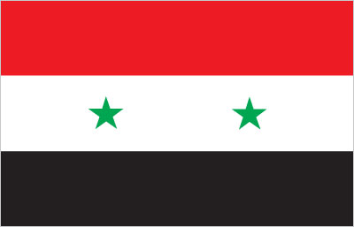Syria
-
 Taiwan
Taiwan -
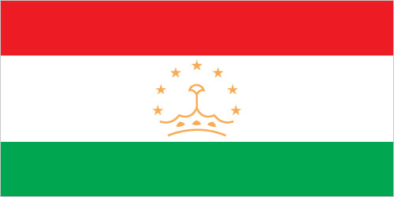Tajikistan
-
 Tanzania
Tanzania -
 Thailand
Thailand -
 Timor-Leste
Timor-Leste -
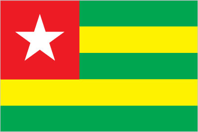Togo
-
Tokelau
-
 Tonga
Tonga -
 Trinidad and Tobago
Trinidad and Tobago -
 Tunisia
Tunisia -
 Turkey
Turkey -
Turkmenistan
-
 Turks and Caicos Islands
Turks and Caicos Islands -
Tuvalu
-
 Uganda
Uganda -
 Ukraine
Ukraine -
United Arab Emirates
-
 United Kingdom
United Kingdom -
 United States
United States -
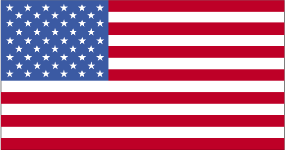United States Pacific Island Wildlife Refuges
-
 Uruguay
Uruguay -
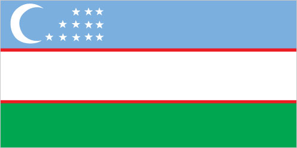Uzbekistan
-
 Vanuatu
Vanuatu -
Venezuela
-
 Vietnam
Vietnam -
 Virgin Islands
Virgin Islands -
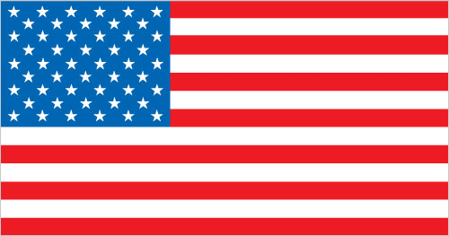Wake Island
-
 Wallis and Futuna
Wallis and Futuna -
 Western Sahara
Western Sahara -
 Yemen
Yemen -
 Zambia
Zambia -
 Zimbabwe
Zimbabwe
note: Afghanistan had more changes to its national flag in the 20th century - 19 by one count - than any other country; the colors black, red, and green appeared on most of them
note: similar to the flags of Chad and Romania, which do not have a national coat of arms in the center, and the flag of Moldova, which does bear a national emblem
note: uses the popular Pan-African colors of Ethiopia
note: the flag is unusual in that it is only British overseas territory that uses a red ensign, all others use blue
note: one of several flags where a prominent component of the design reflects the shape of the country; other such flags are those of Bosnia and Herzegovina, Eritrea, and Vanuatu
note: the national emblem, formerly on the hoist side of the white stripe, has been removed
note: uses the popular Pan-African colors of Ethiopia
note: only national flag to incorporate an actual building into its design
note: almost identical to the flag of Romania but with a darker shade of blue; also similar to the flags of Andorra and Moldova, both of which have a national coat of arms centered in the yellow band; design based on the flag of France
note: design influenced by the US flag
note: similar to the flag of Ecuador, which is longer and bears the Ecuadorian coat of arms superimposed in the center
note: uses the popular Pan-African colors of Ethiopia
note: somewhat resembles the flag of North Korea; similar to the flag of Thailand but with the blue and red colors reversed
note: design similar to the Puerto Rican flag, with the colors of the bands and triangle reversed
note: combines the white and red colors of Bohemia with blue from the arms of Moravia; is identical to the flag of the former Czechoslovakia
note: similar to the flag of Colombia, which is shorter and does not bear a coat of arms
note: similar to the flag of Syria, which has two green stars in the white band, Iraq, which has an Arabic inscription centered in the white band, and Yemen, which has a plain white band
note: similar to the flag of Nicaragua, which has a different coat of arms centered in the white band; also similar to the flag of Honduras, which has five blue stars arranged in an X pattern centered in the white band
note: one of several flags where a prominent component of the design reflects the shape of the country; other such flags are those of Bosnia and Herzegovina, Brazil, and Vanuatu
note: Ethiopia is the oldest independent country in Africa, and the three main colors of her flag (adopted ca. 1895) were so often appropriated by other African countries upon independence that they became known as the Pan-African colors; the emblem in the center of the current flag was added in 1996
note: the blue on the flag is a lighter blue (azure) than that found on the flags of Iceland or Norway
note: the design and/or colors are similar to a number of other flags, including those of Belgium, Chad, Cote d'Ivoire, Ireland, Italy, Luxembourg, and Netherlands
note: uses the popular Pan-African colors of Ethiopia; similar to the flag of Bolivia, which has a coat of arms centered in the yellow band
note: Greek legislation states that the flag colors are cyan and white, but cyan can mean "blue" in Greek, so the exact shade of blue has never been set and has varied from a light to a dark blue over time; in general, the hue of blue normally encountered is a form of azure
note: similar to the flag of El Salvador, which features a round emblem encircled by the words REPUBLICA DE EL SALVADOR EN LA AMERICA CENTRAL centered in the white band; also similar to the flag of Nicaragua, which features a triangle encircled by the words REPUBLICA DE NICARAGUA on top and AMERICA CENTRAL on the bottom, centered in the white band
note: similar to the flag of Niger, which has a small orange disk centered in the white band
note: similar to the flag of Monaco, which is shorter; also similar to the flag of Poland, which is white (top) and red
note: similar to the flag of Syria, which has two stars but no script; Yemen, which has a plain white band; and that of Egypt, which has a golden Eagle of Saladin centered in the white band
note: similar to the flag of Cote d'Ivoire, which is shorter and has the colors reversed - orange (hoist side), white, and green; also similar to the flag of Italy, which is shorter and has colors of green (hoist side), white, and red
note: the Israeli flag proclamation states that the flag colors are sky blue and white, but the exact shade of blue has never been set and can vary from a light to a dark blue
note: similar to the flag of Mexico, which is longer, uses darker shades of red and green, and has its coat of arms centered on the white band; Ireland, which is longer and is green (hoist side), white, and orange; also similar to the flag of the Cote d'Ivoire, which has the colors reversed - orange (hoist side), white, and green
note: the design is based on the US flag
note: the design is based on the flag of the US
note: while many national flags consist of three - and in some cases five - horizontal bands of color, the flag of Mauritius is the world's only national flag to consist of four horizontal color bands
note: similar to the flag of Italy, which is shorter, uses lighter shades of red and green, and does not display anything in its white band
note: similar to the flag of Indonesia which is longer and the flag of Poland which is white (top) and red
note: one of only two national flags featuring a firearm, the other is Guatemala
note: Nepal is the only country in the world whose flag is not rectangular or square
note: similar to the flag of India, which has a blue spoked wheel centered in the white band
note: somewhat reminiscent of the flag of Canada with its use of only two colors and depiction of a prominent local floral symbol in the central white band; also resembles the green and white triband of Nigeria
note: the three color bands resemble those on the flag of the Netherlands; one of only three national flags that differ on their obverse and reverse sides - the others are Moldova and Saudi Arabia
note: in wartime the flag is flown upside down with the red band at the top
note: similar to the flags of Indonesia and Monaco which are red (top) and white
note: design initially influenced by the US flag, but similar to the Cuban flag, with the colors of the bands and triangle reversed
note: now similar to the flag of Chad, whose blue band is darker; also resembles the flags of Andorra and Moldova
note: the colors may have been based on those of the Dutch flag; despite many popular interpretations, there is no official meaning assigned to the colors of the Russian flag; this flag inspired several other Slav countries to adopt horizontal tricolors of the same colors but in different arrangements, and so red, blue, and white became the Pan-Slav colors
note: the flag of France used for official occasions
note: uses the popular Pan-African colors of Ethiopia
note: the only national flag to display an inscription as its principal design; one of only three national flags that differ on their obverse and reverse sides - the others are Moldova and Paraguay
note: uses the popular Pan-African colors of Ethiopia; the colors from left to right are the same as those of neighboring Mali and the reverse of those on the flag of neighboring Guinea
note: the Pan-Slav colors were inspired by the 19th-century flag of Russia
note: the Pan-Slav colors were inspired by the 19th-century flag of Russia
note: the South African flag is one of only two national flags to display six colors as part of its primary design, the other is South Sudan's
note: the red and yellow colors are related to those of the oldest Spanish kingdoms: Aragon, Castile, Leon, and Navarre
note: similar to the flag of Samoa
note: similar to the flag of Costa Rica but with the blue and red colors reversed
note: the flag is based on that of Turkey, itself a successor state to the Ottoman Empire
note: the design and colors have been the basis for a number of other flags, including Chile, Liberia, Malaysia, and Puerto Rico
note: the banner was inspired by the national colors of Argentina and by the design of the US flag
note: one of several flags where a prominent component of the design reflects the shape of the country; other such flags are those of Bosnia and Herzegovina, Brazil, and Eritrea
note: the design is derived from an original red banner with a white cross pattee that was introduced in the 19th century by French missionaries; the flag of France is used for official occasions
note: similar to the flag of Syria, which has two green stars in the white band, and of Iraq, which has an Arabic inscription centered in the white band; also similar to the flag of Egypt, which has a heraldic eagle centered in the white band